Scintilla
clam
Family
Galeommatidae
updated May 2020
Where
seen? This tiny clam can move like snails, crawling on a foot holding the shell on its back. It is found under stones, often several together, on many of our shores.
Features: 1-2cm. Shell
oval, thin and white. The mantle sometimes covers the entire
valves. When submerged, little finger-like structures appear
from the mantle. Some have a wide 'foot' created from fused
mantle edges. The foot holds on to a hard surface as
well as to slowly creep about or 'jump' around quickly. |
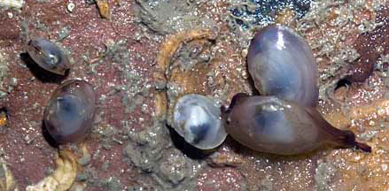
Sisters Island,
Feb 06 |

Wide
'foot' created from mantle edges.
Terumbu Semakau, Jun 12 |
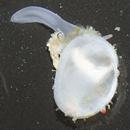
Cyrene Reef, Jun 12 |
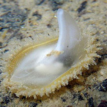
Sembawang, Dec 09
Photo shared by Loh Kok Sheng on flickr. |
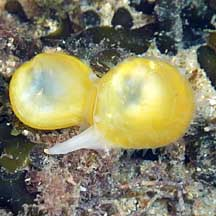
Terumbu Bukom, Nov 10
Photo shared by Loh Kok Sheng on his
blog. |
| Scintilla
clams on Singapore shores |
| Other sightings on Singapore shores |
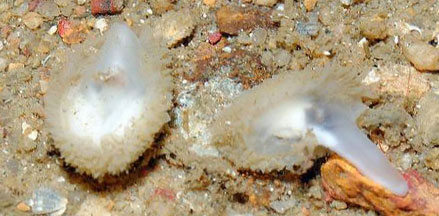
Punggol, Nov 13
Photo shared by Loh Kok Sheng on flickr. |
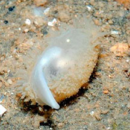
Pasir Ris Park, Mar 13
Photo shared by Loh Kok Sheng on flickr. |
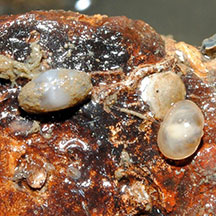
Changi, Dec 12
Photo shared by Loh Kok Sheng on flickr. |
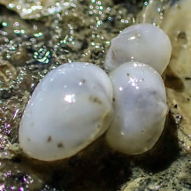
Pulau Ubin Jetty, Jun 25
Photo shared by Vincent Choo on facebook. |
|
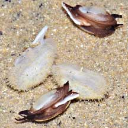
East Coast Park, May 21
Photo shared by Loh Kok Sheng on facebook. |
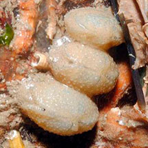
East Coast Park, Jul 14
Photo shared by Loh Kok Sheng on flickr. |
|
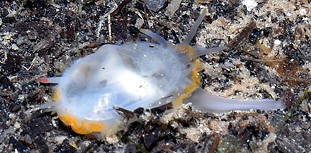
Berlayar Creek, Mar 20
Photo shared by Loh Kok Sheng on facebook. |
|
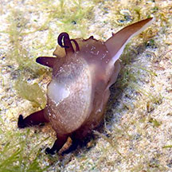
Sentosa, Dec 18
Shared by Jianlin Liu on facebook. |
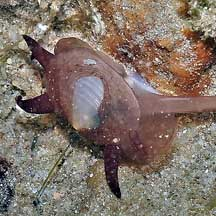
Sentosa, Nov 09
Shared by James Koh on his
blog. |
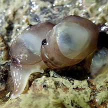
Sentosa Serapong, Jul 21
Shared by Jianlin LIu on facebook. |
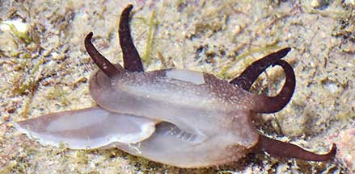
Lazarus Island, Nov 20
Shared by Loh Kok Sheng on facebook. |
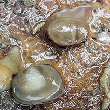
Lazarus Island, Nov 20
Shared by Vincent Choo on facebook. |
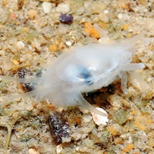
Seringat Kias, Jul 11
Shared by Loh Kok Sheng on his
blog. |
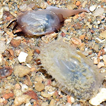
Big Sisters Island, Sep 20
Shared by Loh Kok Sheng on facebook. |
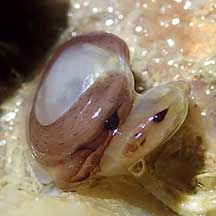
Kusu Island, Jun 21
Shared by Jianlin Liu on facebook. |
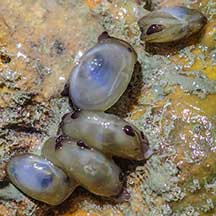
Pulau Hantu, Apr 21
Shared by Vincent Choo on facebook. |
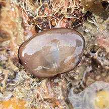
Terumbu Hantu, May 25
Photo shared by Che Cheng Neo on facebook. |
|
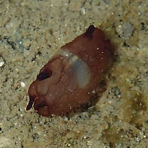
Beting Bemban Besar, May 17
Photo shared by Toh Chay Hoon on facebook. |
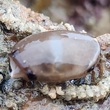
Terumbu Bemban, Apr 24
Photo shared by Che Cheng Neo on facebook. |
|
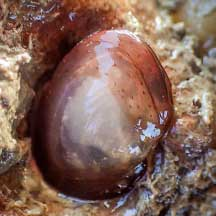
Terumbu Pempang Tengah, May 21
Photo shared by Vincent Choo on facebook. |
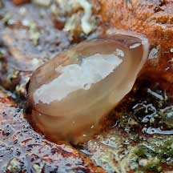
Pulau Biola, Jan 22
Shared by Jianlin Liu on facebook. |
|
Family
Galeommatidae recorded for Singapore
from
Tan Siong Kiat and Henrietta P. M. Woo, 2010 Preliminary Checklist
of The Molluscs of Singapore.
^from WORMS
| |
Galeomma
layardi
Galeomma formosa
Galeomma paucistriata
Montacuta sp. (^now in Family Montacutidae)
Scintilla cumingii=^Solecardia eburnea
Scintilla philippinensis
Scintilla rosea
Scintilla timoriensis |
|
|
References
- Tan Siong
Kiat and Henrietta P. M. Woo, 2010 Preliminary
Checklist of The Molluscs of Singapore (pdf), Raffles
Museum of Biodiversity Research, National University of Singapore.
|
|
|